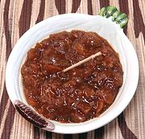

|
Dried Fruit ChutneySouth Africa - Blatjang (Afrikaans) | ||||
| Makes: Effort: Sched: DoAhead: |
7 cups *** 16 days Must |
Blatjang is the popular chutney in RSA, served with meats and used as an ingredient in recipes. This recipe has a lot more fruit and a lot less sugar than bottled chutneys, like Mrs H.S. Ball's. | |||
|
8 8 8 3-1/4 ------- 3 lrg 12 1/2 1/2 1 1 1 2 3 |
oz oz oz c --- cl oz T T c t t c c |
Dried Apricots Dried Peaches Raisins, white Water, Boiling -- Seasonings Garlic Onion Coriander Seed Salt Brown Sugar Ginger, Ground Chili Powder (1) Cider Vinegar Malt Vinegar |
Do Ahead - (30 min + overnight)
|